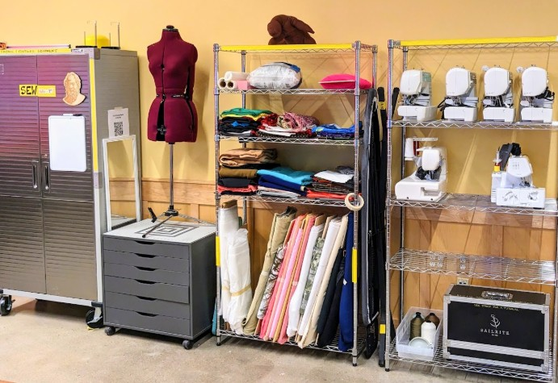

Description
Sew whaaaat?
How to Use
Sewing and textiles equipment training happens as requested by staff and/or community members. It is also the subject of some workshops. See workshops on the BTU Lab Calender.
See the BTU Mischief Maker page to contact one of our community experts for sewing tutorials.

Equipment & Supplies
- Multi-stitch Sewing Machines
- 4-Thread Serger
- Industrial Sewing Machines
- Cutting Mats
- Fabric Scissors and Knives
- Pins and Needles
- Iron and Ironing Board
- Assortment of Fabrics
- ...and more!